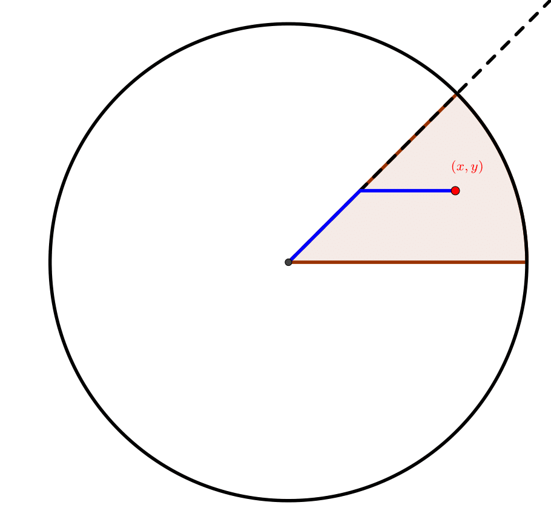

Riddler: As the drone flies — Can you make a speedy delivery?
My solution to this week’s riddler. (See more of my Riddler solutions here.)
The Problem
From Graydon Snider comes a dilemma of delivery:
A restaurant at the center of Riddler City is testing an airborne drone delivery service against their existing fleet of scooters. The restaurant is at the center of a large Manhattan-like array of square city blocks, which the scooter must follow.
Both vehicles travel at the same speed, which means drones can make more deliveries per unit time. Assume that (1) Riddler City is circular in shape, as you may recall (2) deliveries are made to random locations throughout the city and (3) the city is much, much larger than its individual blocks.
In a given amount of time, what is the expected ratio between the number of deliveries a drone can make to the number of deliveries a scooter can make?
Extra credit: In addition to traveling parallel to the city blocks, suppose scooters can also move diagonally from one corner of a block to the opposite corner of the block. Now, what is the new expected ratio between the number of deliveries a drone can make and the number of deliveries a scooter can make?
Solution
Let the radius of Riddler City be equal to 1, so that the extent of the city is simply the unit disc. As indicated in the (non-extra-credit) problem statement, the scooter travels according to the taxicab metric (also known as the Manhattan distance). To solve this problem, we need to compute the expected distance that the drone and scooter will travel given a randomly chosen point in the City.
The amount of time a delivery takes is proportional to its distance, and the expected number of deliveries that can be made in a given amount of time is proportional to the inverse of the average time. So the ratio of the expected numbers of deliveries is equal to the inverse of the ratio of the expected distances.
As the drone flies
We first consider the drone, which always takes the most direct route by flying in a straight line. Using polar coordinates \(r\in[0,1]\) and \(\theta\in[0,2\pi)\) to parameterize the disc, the distance to a point from the origin is just the radial distance \(r\). The desired expected value is simply the average of \(r\) over the disc divided by the total area (which is equal to π). The area element for this integral is \(\operatorname{d} \mspace{-1mu}A=r\,\operatorname{d} \mspace{-1mu}r\,\operatorname{d} \mspace{-1mu}\theta\), so to compute the expected distance that the drone travels, we have
\[ \begin{align*} E_{\text{drone}} &= \frac{1}{\pi}\int_{\text{City}}r\, \operatorname{d} \mspace{-1mu}A\\ &= \frac{1}{\pi}\int_0^{2\pi}\int_0^1r^2\, \operatorname{d} \mspace{-1mu}r\,\operatorname{d} \mspace{-1mu}\theta\\ &= \frac{1}{\pi}(2\pi)\frac{1}{3}\\ & = \frac{2}{3}, \end{align*} \]
so the average distance as the drone flies is equal to \(2/3\).
Cardinal scooter
Now let’s figure out what the expected distance the scooter has to travel given a randomly chosen point in the City. Given a point \((x,y)\) in the disc, the distance (as the scooter drives) from the center to that point is given by
\[ \Vert(x,y)\Vert_{\text{scooter}} = \vert x\vert + \vert y\vert. \]
Parameterizing the disc in polar coordinates to that \(x=r\cos\theta\) and \(y=r\sin\theta\), and this expression becomes \(r(\vert \sin\theta\vert + \vert \cos\theta\vert)\). To compute the expected distance in the taxicab metric, we can simplify the integral by integrating only over the quadrant where \(\cos\theta\) and \(\sin\theta\) are both positive and multiply the result by \(4\). We have
\[ \begin{align*} E_{\text{scooter}} &= \frac{1}{\pi}\int_{\text{City}}r\big(\vert \sin\theta\vert + \vert \cos\theta\vert \big)\, \operatorname{d}\mspace{-1mu}A\\ &= \frac{4}{\pi}\int_0^{\pi/2}\int_0^1r^2(\sin\theta + \cos\theta)\, \operatorname{d} \mspace{-1mu}r\,\operatorname{d} \mspace{-1mu}\theta\\ &= \frac{4}{\pi}\Big(\int_0^{\pi/2}(\sin\theta + \cos\theta)\,\operatorname{d} \mspace{-1mu}\theta\Big)\frac{1}{3}\\ & = \frac{8}{3\pi}. \end{align*} \]
Note that
\[ \frac{E_\text{drone}}{E_{\text{scooter}}} = \frac{4}{\pi} \approx 1.27, \]
so the scooter needs to travel on average about 27% further to make the same delivery!
In the long run, the ratio of the number of deliveries that a drone can make in the same time as the scooter is equal to the same ratio, \(4/\pi\). That is, the drone makes on average roughly 27% more deliveries.
Extra credit: diagonal scooter
Allowing the scooter to also travel along the diagonals gives rise to a new metric that we must now consider. Given a point \((x,y)\) in the City, the distance from this point to the center is the shortest path that the scooter can take to get there by traveling only along diagonals and orthogonal cross streets. How might we compute this metric? Let’s denote this metric as
\[ \Vert(x,y)\Vert_{\text{scooter*}} \]
where we use \(\text{scooter*}\) to indicate the augmented scooter.
To examine the most efficient routes for the scooters, first note that, if the scooter can’t get to its destination by traveling in a single cardinal direction (i.e., needing only to go straight N, S, E, or W), traveling along a diagonal is much more efficient than traveling along two different cardinal directions.
For example, if a route involved some amount of travel on a street headed due north followed by a stretch of the same distance but headed due west, we could instead have arrived there in a more efficient manner by traveling northwest along the NW diagonal. This would get us to the same place but require a total travel distance equal to a fraction of \(1/\sqrt{2}\) of the distance taken by only going north then west.
Thus, the most efficient routes for the scooter will always be to first take a diagonal as far as possible, until you are at a point where you can then travel a straight line in a single cardinal direction (N, S, E, or W) until you reach your destination.
For points in the first eighth slice of the City, we have the following diagram to help us find the shortest path.

That is, the shortest path to the point \((x,y)\) is to travel NW along the diagonal until you are as far north as the destination, then travel due west until you arrive.
In this slice of the disc (i.e., all the points \((x,y)\) such that \(0\leq y\leq x\) and \(x^2+y^2\leq 1\)), the augmented scooter distance evaluates to
\[ \begin{align*} \Vert(x,y)\Vert_\text{scooter*} &= \sqrt{2}y + (x-y)\\ & = x + \big(\sqrt{2}-1\big)y \end{align*} \]
In polar coordinates, this expression becomes
\[ r\big(\cos\theta + \big(\sqrt{2}-1\big)\sin\theta\big). \]
By symmetry, the expected distance will be the same for all eight slices, so we can integrate over just this slice and divide by its area (\(\pi/8\)) to get the expected distance over the whole City. Thus, we have
\[ \begin{align*} E_{\text{scooter*}} & = \frac{8}{\pi}\int_0^{\pi/4}\int_0^1 r\Big(\cos\theta + \big(\sqrt{2}-1\big)\sin\theta\Big)r\,\operatorname{d} \mspace{-1mu}r\,\operatorname{d} \mspace{-1mu}\theta \\ & = \frac{8}{\pi}\int_0^1 r^2\, \operatorname{d} \mspace{-1mu}r \int_0^{\pi/4}\big(\cos\theta + \big(\sqrt{2}-1\big)\sin\theta\big)\,\operatorname{d} \mspace{-1mu}\theta\\ & = \frac{8}{3\pi}\Bigg(\frac{1}{\sqrt{2}} + \big(\sqrt{2}-1\big)\left(1-\frac{1}{\sqrt{2}}\right)\Bigg)\\ &=\frac{8}{3\pi}\left(\frac{1}{\sqrt{2}}+\left(\frac{3}{\sqrt{2}}-2\right)\right)\\ &= \frac{8}{3\pi}2\left(\sqrt{2}-1\right). \end{align*} \]
Hence, the average distance that the diagonal scooter travels is on average \(2(\sqrt{2}-1)\approx0.828\) times the distance that the regular scooter travels.
In relation to the drone, the ratio of the expected number of deliveries that the drone can make vs the scooter is equal to
\[ \frac{E_{\text{scooter*}}}{E_{\text{drone}}} = \frac{8\big(\sqrt{2}-1\big)}{\pi}\approx1.055, \]
so the drone only makes about 5.5% more deliveries than the diagonal scooter.